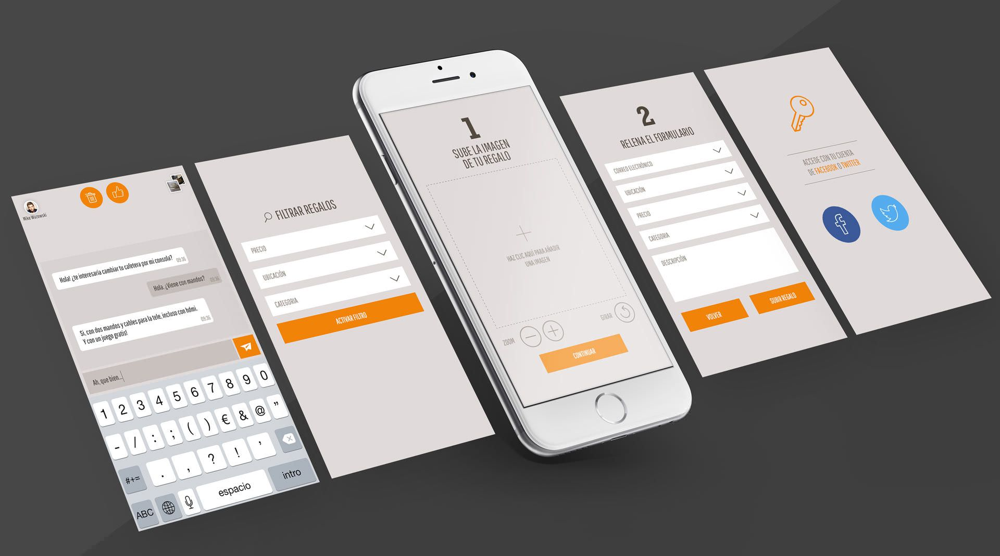

Diseño de Interfaz (UI/UX)
El diseño de interfaz y experiencia de usuario es clave para crear software educativo claro, atractivo y funcional, adaptado a las necesidades de los usuarios.
Elementos visuales y funcionales
El diseño de interfaz (UI) define cómo se verá el software: pantallas, menús, botones e iconos. Su objetivo es construir un entorno atractivo que facilite la navegación y motive al estudiante a aprender.

La experiencia de usuario (UX) se enfoca en que el software sea intuitivo, accesible y coherente. Esto implica organizar rutas claras, evitar confusiones visuales y asegurar una navegación fluida.
Adaptación al público objetivo
El diseño debe adaptarse a quien lo usará: niños, jóvenes, adultos, principiantes o expertos. Cambian los colores, tamaño de botones, lenguaje, animaciones y nivel de interacción según el usuario final. Un buen UI/UX elimina obstáculos y permite que el aprendizaje fluya naturalmente.